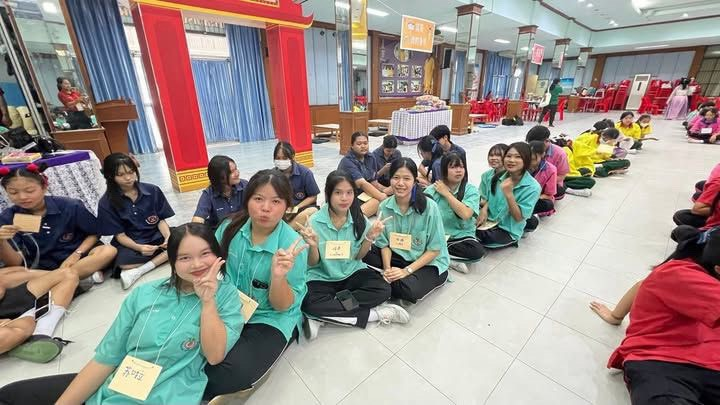
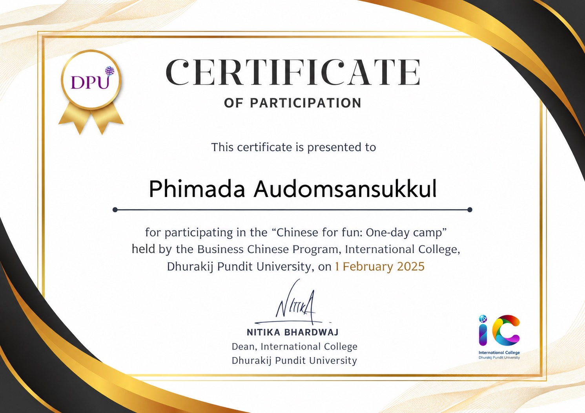
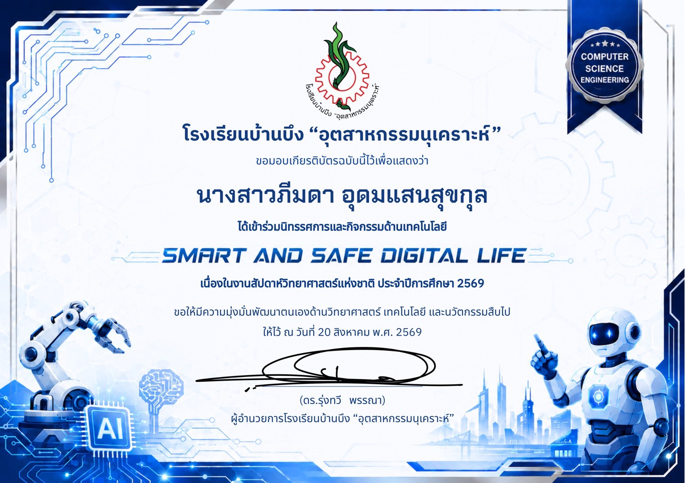

02 / MY WORK
ผลงาน.

WORK 01
ผลงานที่หนึ่ง
กิจกรรมการร้องประสานเสียงในวันตรุษจีน
เป็นกิจกรรมที่จัดขึ้นวันตรุษจีนต้องใช้เวลาในการฝึกฝนใช้ความสามัคคีความพร้อมเพรียงกัน
สิ่งที่ได้รับ
ได้ฝึกการทำงานร่วมกับผู้อื่น การแก้ไขปัญหาเฉพาะหน้า และการรับผิดชอบหน้าที่ของตัวเอง

WORK 02
ผลงานที่สอง
เข้าร่วมกิจกรรมค่ายปันน้ำใจ
แลกเปลี่ยนความรู้ภาษาจีนกับเพื่อนต่างโรงเรียนผ่านการทำกิจกรรมร่วมกัน
สิ่งที่ได้รับ
ได้ฝึกความคิดสร้างสรรค์ การวางแผน และการนำความรู้ที่มีมาแบ่งปันให้ผู้อื่น

WORK 03
เกียรติบัตรค่ายแคทแคมป์
การเข้าร่วมกิจกรรมค่ายแคทแคมป์ (CAT CAMP)
เข้าร่วมกิจกรรมค่ายพัฒนาภาษาจีนแคทแคมป์ซึ่งจัดโดยมหาวิทยาลัยธุรกิจบัณฑิต
สิ่งที่ได้รับ
ได้รับความรู้และประสบการณ์ใหม่ๆ ฝึกการเรียนรู้ร่วมกับผู้อื่น และเพิ่มพูนทักษะภาษาจีนและคำศัพท์ใหม่ๆ

WORK 04
เกียรติบัตรวันวิทยาศาสตร์
การเข้าร่วมกิจกรรมวันวิทยาศาสตร์
เข้าร่วมการแข่งขันและกิจกรรมทางวิทยาศาสตร์ เพื่อส่งเสริมทักษะกระบวนการคิดวิเคราะห์เชิงวิทยาศาสตร์
สิ่งที่ได้รับ
ได้พัฒนาทักษะการคิดอย่างเป็นระบบ เพิ่มพูนความรู้ทางวิทยาศาสตร์และเทคโนโลยี และการนำทักษะมาประยุกต์ใช้ในชีวิตประจำวัน